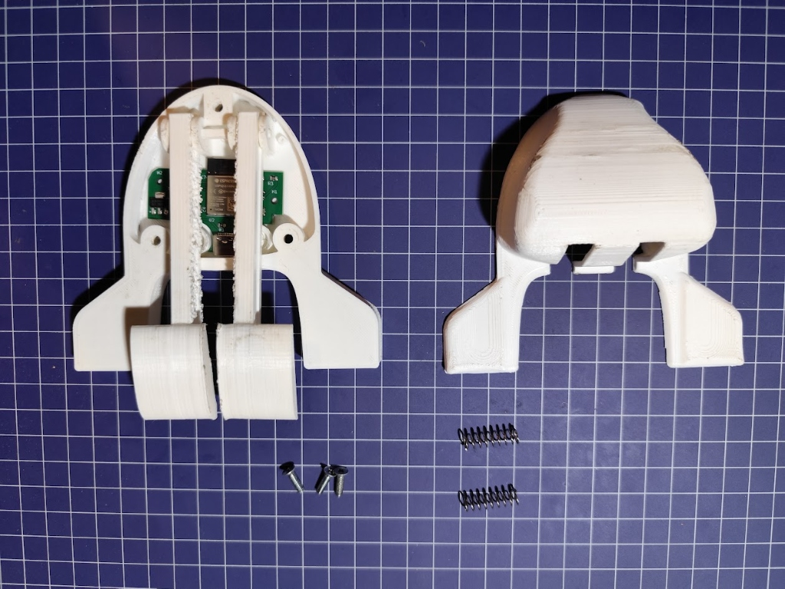

QuickLap
Controlador compacte de sim-racing per a escriptori: direcció analògica i pedals progressius llestos en segons, sense muntatges complexos.
Gaudir de la simulació de conducció amb precisió real sense necessitat d'un cockpit ni temps de muntatge.
QuickLap neix amb l'objectiu de condensar el control analògic en un dispositiu d'escriptori net i immediat. El desenvolupament cobreix el cicle complet de producte: des de l'ergonomia i el modelat mecànic CAD fins al disseny de la placa electrònica PCB i els prototips funcionals impresos en 3D.
Disseny Mecànic CAD
Geometria compacta, allotjaments interns i ergonomia de conducció modelada íntegrament amb SolidWorks.
Electrònica PCB
Disseny d'esquemàtic i rutatge de placa electrònica a mida amb KiCad per a lectura precisa d'entrades analògiques.
Prototipatge 3D
Iteració ràpida en impressió 3D FDM per validar toleràncies mecàniques, recorreguts i muntatge funcional.
Projecte en fase de desenvolupament actiu, combinant validació física de prototips, calibratge de sensors i millores iteratives de producte.
Visitar quicklap.pro